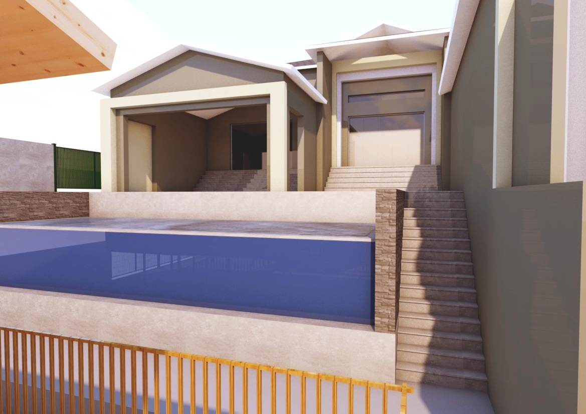
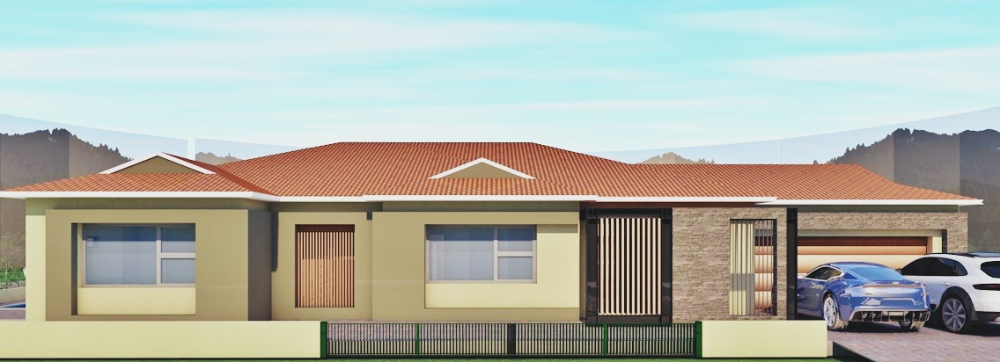

a vision passed down, a practice carried forward.
founded by the late mr. ml khumalo on a simple premise — give back to the community while building a nation — mlk architects is now run by his son, managing director malibongwe khumalo, with a small office of qualified architectural technologists.
registered in 1997. operating since 2007. still in the family.
mlk retailing and building services, trading as mlk architectural services (reg. 2016/206334/07), was formally registered in 1997 and began operations in 2007. the practice is fully owned by black africans and holds level 2 b-bbee contributor status.
we provide our services in line with south african council for the architectural profession (sacap) regulation, and with the construction and building rules that govern our sites. mlk architectural services also acts as a training centre for young technologists — we employ postgraduates in the field and give them real project responsibility early.

old mill estates residence — design render"to grow into a major architectural services business in south africa."
that's the vision, in the practice's own words. the mission is just as plain: ensure client satisfaction through suitable products, professional planning and good design. three values sit underneath both.
complete customer focus
understanding a brief properly, then planning and designing around it — and staying close to a project from inception to close-out.
honesty in practice
doing the unglamorous parts properly: regulation, reporting, coordination, and telling clients the truth about cost and time.
community and sustainability
social responsibility to the communities we build in, and a growing commitment to sustainable, low-carbon design methods.
able to run a project end to end.
mlk architects can take a commission from the first conversation through to a finished, occupied building — across the following:
led from the front, by someone who's done the work on site.

malibongwe khumalo
managing director / memberqualification — national diploma in architecture technology (2009–11), durban university of technology.
background — after qualifying, malibongwe worked under his late father at mlk architectural services — site supervision, project presentation, design and a wide range of other duties across numerous projects. he has spent the last five years running an office of qualified architectural technologists.
recent project work — canasa shopping mall (kzn), ingulule primary school, uj fashion faculty.
the formal record — surfaced openly, for tender and procurement use.
south african council for the architectural profession
psat 24751103 · prarch 21142
level 2 contributor
100% black-owned
mlk retailing & building services cc
t/a mlk architectural services
reg. 2016/206334/07 · vat 4370255392
major appointments and completions, the past five years.
year — project — outcome / value. no logos, no awards copy — just the record.
earlier engagements (2004–2019) include doj courts in zululand and umkhanyakude (r5m), doe mud-school programmes across sisinke and umkhanyakude (r10m–r15m), doe masuku primary school in uthungulu (r18m), dsd new works across ugu, zululand, umkhanyakude and uthungulu (r35m), doh repairs and alterations in umkhanyakude and zululand (r275m), and doe phase-6 repairs and renovations across uthungulu, zululand and ilembe (r50m) — all delivered for the independent development trust and delca system (pty) ltd, and successfully completed.